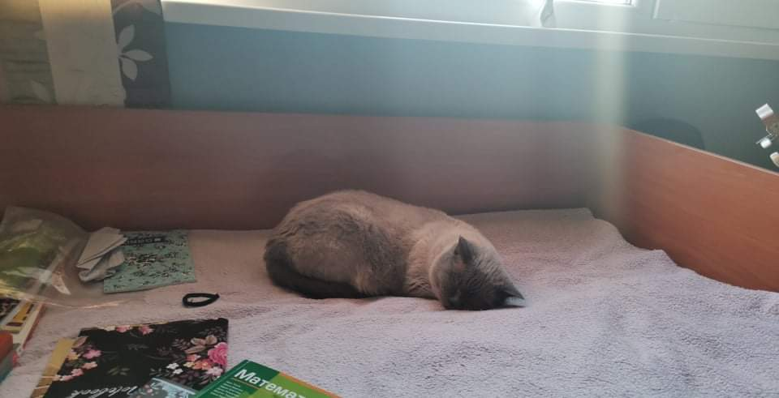

прокълната част от домашното ми
Котка
Травмирана котка


Mислех си да пиша нещо за политическия живот в българия или как бъдещите ми дружки, които обмислят кариера в ИТ сферата да си намерят приятелка
затова ще обсъдим ходенето до тоалетна в час или пък нещо от spodeli.net
тази история ми се струва като леко четиво, реших да не ви хвърлям в дълбокотоо признавам си, нещата които чета в този сайт могат да докарат неопитен човек до нервна криза (най-малкото) в повечето случаи това са "четива" от тролове без работа, ето едно такова за пример: